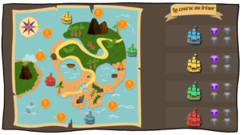

J'ai découvert ce jeu collectif sur le blog "Charivari à l'école" et c'est devenu un rituel hebdomadaire incontournable dans ma classe !
Chaque vendredi, nous jouons à la course au trésor. Le principe est simple : je choisis un thème de révision avec les élèves (calcul mental, grammaire, sciences, etc.) et nous partons à l'aventure !
Le jeu utilise un plateau numérique avec des bateaux et un diamant. Je projette le plateau au tableau et j'anime le jeu depuis l'ordinateur de la classe.
L'attente du vendredi est palpable ! Les élèves attendent ce moment avec impatience. J'ajoute une touche théâtrale en criant "À l'abordaaaage !" et autres expressions de pirates, ce qui rend le moment encore plus amusant.
Je recommande vraiment ce jeu ! Si vous l'essayez, n'hésitez pas à me partager vos retours d'expérience.